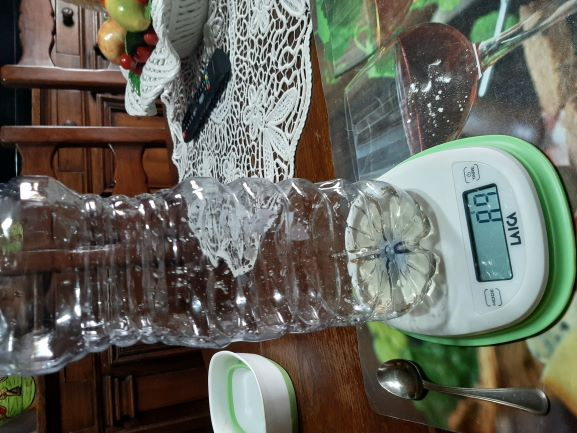
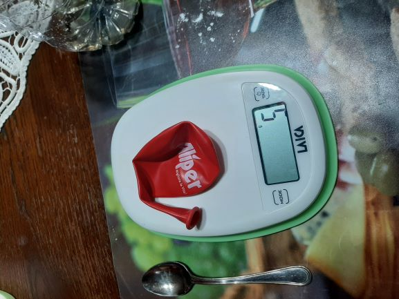
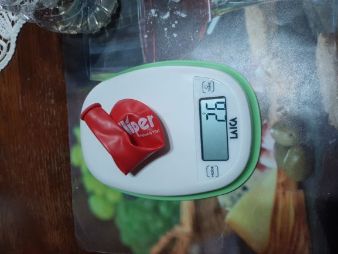
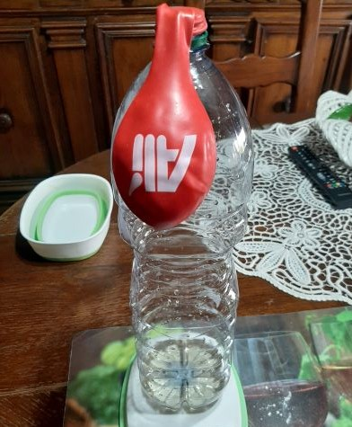
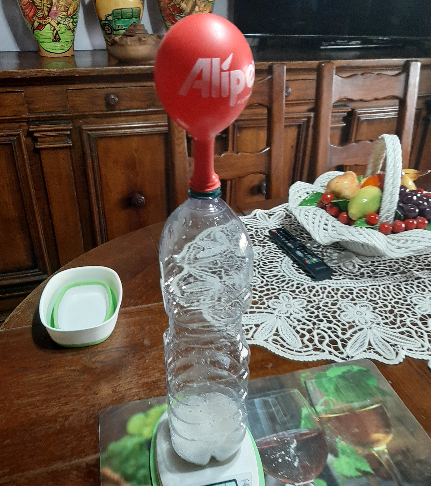
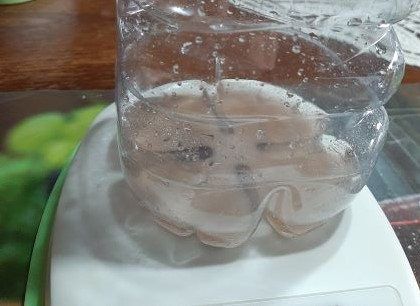

Enunciato da verificare: "In una reazione chimica la massa dei reagenti è uguale alla massa dei prodotti"
Obiettivo: Dimostrare la veridicità della legge di Lavoisier
Materiali necessari per l'esperimento
Strumenti:
- Una bilancia digitale
- Un imbuto
- Un cucchiaino
- Un palloncino
Vetreria:
- Una bottiglietta(di plastica o vetro)
- Un becher
Sostanze:
- Bicarbonato di sodio: massa corrispondente a 3 cucchiaini
- Aceto 50 ml
Procedimento
-
Pesare la bottiglia registrando il risultato
Mediante l'uso della bilancia digitale, si pesa la bottiglia e si osserva che possiede una massa di 35g.
-
Inserire l’aceto nella bottiglia
Misurando 50ml di aceto con il becher, si versa il liquido nella bottiglia per mezzo di un imbuto.
-
Pesare la bottiglia con l’aceto
Mediante l'uso della bilancia digitale, si pesa la bottiglia contenente l'aceto e si osserva che possiede una massa di 89g.
 -
Calcolare il peso dell’aceto
Per ottenere la massa dell'aceto si calcola:
MassaAceto = MassaBottigliaConAceto - MassaBottiglia = 89g - 35g = 54g
-
Pesare il palloncino
Mediante l'uso della bilancia digitale, si pesa il palloncino e si osserva che possiede una massa di 5g
 -
Aggiungere mediante l’imbuto il bicarbonato nel palloncino
Per mezzo del cucchiaino e dell'imbuto si inserisce nel palloncino il bicarbonato
-
Pesare il palloncino con il bicarbonato
Mediante l'uso della bilancia digitale, si pesa il palloncino con il bicarbonato e si osserva che possiede una massa di 26g
 -
Misurare la massa del bicarbonato
Si ottiene la massa del bicarbonato calcolando:
MassaBicarbonato = PesoPalloncinoConBicarbonato - PesoPalloncino = 21g
-
Calcolare la massa totale dei reagenti
Avendo ricavato mediante i precedenti calcoli la massa del bicarbonato e dell' aceto, si può ottenere la massa totale dei reagenti eseguendo:
MassaReagenti = MassaBicarbonato + MassaAceto = 21g + 54g = 75g
-
Applicare il palloncino al collo della bottiglia in modo da non far passare l’aria
 -
Sollevare il palloncino facendo cadere il bicarbonato nell’aceto
Si osserva che il bicarbonato cadendo nell'aceto reagisce creando un composto. Il palloncino si gonfia a causa della produzione di gas. Si nota anche la produzione di schiuma e bolle.
 -
Pesare nuovamente la bottiglia
La bottiglia con i reagenti e il palloncino pesa 115g.
-
Calcolare la massa dei prodotti
Si può ottenere la massa dei prodotti eseguendo:
MassaProdotti = MassaBottigliaConComposto - MassaBottiglia - MassaPalloncino = 115g - 35g - 5g = 75g
-
Confrontare i risultati
Confrontando i risultati si ottiene che la massa dei prodotti è uguale a quella dei reagenti
MassaReagenti = MassaProdotti = 75g
Osservazioni
| materiali | massa |
|---|---|
| bottiglia | 35g |
| palloncino | 5g |
| bicarbonato | 21g |
| aceto | 54g |
| massa totale | 115g |
| massa prima della reazione | massa dopo la reazione | |
|---|---|---|
| massa totale | 115g | 115g |
Si può osservare che la massa dei reagenti rimane invariata in seguito alla reazione chimica in ambiente chiuso.
Dopo essere stato lasciato a riposo il composto diventa di colore grigiastro.
Conclusioni
Si può dunque concludere che la legge di Lavoisier è valida perchè è stato dimostrato che in una reazione chimica la massa dei reagenti è uguale a quella dei prodotti.